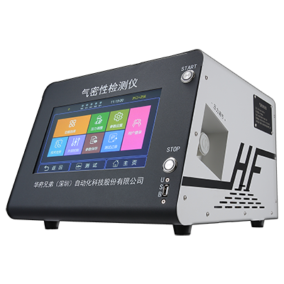
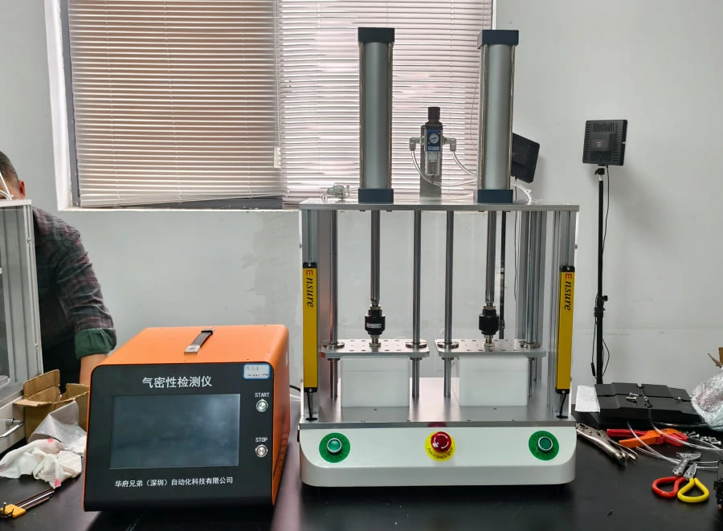
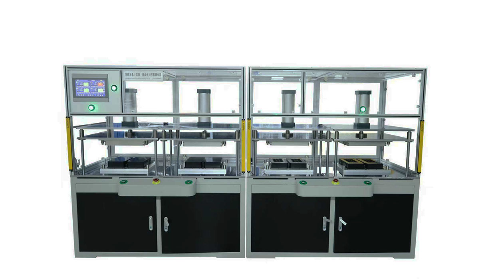
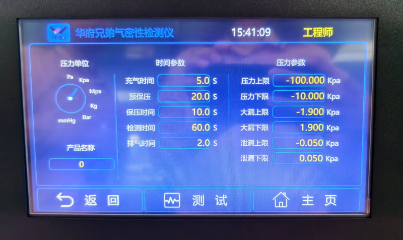

هل كانت جميع هذه المتطلبات التي طرحها العملاء في الأصل تتعلق في الواقع بـاختبار التسرب؟ مقال واحد يوضح أكثر من 15 تسمية صناعية شائعة لـجهاز اختبار التسرب.
في مجال التصنيع الصناعي، كثيراً ما يواجه الشركات عند شراء معدات الاختبار مشكلة واحدة: لماذا تحمل نفس المعدات العديد من المسميات المختلفة؟
على سبيل المثال، يطلق عليها البعض اسم "جهاز اختبار التسرب الهوائي"، وآخرون يسمونها "جهاز فحص التسرب الهوائي"، بينما يعرفها آخرون بـ "جهاز كشف التسرب"، "جهاز قياس التسرب"، "جهاز اختبار مقاومة الماء" وغيرها. بالنسبة للشركات التي بدأت للتو في مجال اختبار الإحكام، قد تسبب هذه التسميات بعض الارتباك.
في الواقع، في معظم الحالات تشير هذه المسميات إلى أجهزة تُستخدم لاختبار أداء الإحكام، والتسرب، ومقاومة الماء للمنتجات. يستعرض هذا المقال بالتفصيل المسميات الشائعة لمعدات اختبار التسرب الهوائي، لمساعدتك على فهم مصطلحات القطاع بسرعة.
أولاً: ما هي المسميات الشائعة لأجهزة اختبار التسرب الهوائي؟
حسب عادات القطاع، ومجال التطبيق، والتسميات الداخلية لكل شركة، توجد عدة أسماء شائعة لهذه الأجهزة.
1. المسميات المتعلقة باختبار التسرب الهوائي
هذا هو الأكثر شيوعاً في القطاع.
جهاز اختبار التسرب الهوائي
من أكثر المسميات استخداماً حالياً، ويشير عادةً إلى الجهاز المستخدم للكشف عن مشاكل التسرب في المنتجات.

معدات اختبار التسرب الهوائي، جهاز فحص التسرب الهوائي، معدات فحص التسرب الهوائي
تحمل نفس المعنى تقريباً، لكن بعض الشركات تفضل استخدام مصطلح "فحص" أو "اختبار"، ويُستخدم عادةً لوصف أنظمة الاختبار الآلية الكاملة أو تركيبات الاختبار الكبيرة. على سبيل المثال:
- معدات اختبار تسرب هوائي آلية
- معدات اختبار تسرب هوائي على خط الإنتاج
2. المسميات المتعلقة بمقاومة الماء
عندما يُستخدم اختبار التسرب الهوائي للتحقق من مقاومة المنتج للماء، تتغير التسمية غالباً. عدم تسرب الماء لا يعني بالضرورة عدم تسرب الهواء، كما في حالة أغشية التهوية المقاومة للماء، لكن مبدأ "اختبار التسرب الهوائي" و"اختبار مقاومة الماء" واحد.
جهاز اختبار مقاومة الماء، جهاز فحص مقاومة الماء
يُستخدم بشكل أساسي لاختبار:
- مستوى حماية IP67
- مستوى حماية IP68
- درجات الحماية من الغبار والماء
نظراً لأن أداء مقاومة الماء لبعض المنتجات لا يمكن اختباره مباشرة بالغمر، لذلك يتم التحقق من مقاومة الماء بشكل غير مباشر عبر اختبار التسرب الهوائي.

معدات اختبار مقاومة الماء، معدات فحص مقاومة الماء
تُستخدم عادةً في خطوط الإنتاج الآلية للفحص الجماعي، وهي في الأساس تطبيق من تطبيقات معدات اختبار التسرب الهوائي. تستخدم بكثرة في:
- اختبار مقاومة الماء للهواتف الذكية
- اختبار مقاومة الماء للساعات الذكية
- اختبار مقاومة الماء للإضاءات

3. المسميات المتعلقة بالإحكام
بعض القطاعات تفضل استخدام مصطلح "الإحكام".
جهاز اختبار الإحكام، معدات اختبار الإحكام، جهاز فحص الإحكام، معدات فحص الإحكام
القطاعات التي تستخدم هذه المصطلحات عادةً ما تكون ذات متطلبات عالية لاختبار التسرب الهوائي. القطاعات الشائعة:
- الأجهزة الطبية
- صناعة التغليف
- قطاع السيارات

4. المسميات المتعلقة بكشف التسرب
"كشف التسرب" هو تعبير آخر عن "فحص التسرب".
جهاز كشف التسرب، معدات كشف التسرب
في بعض المناطق والقطاعات، قد يكون مصطلح "جهاز كشف التسرب" أكثر شيوعاً من "جهاز اختبار التسرب الهوائي". على سبيل المثال:
- معدات كشف تسرب البطاريات
- معدات كشف تسرب المضخات
- معدات كشف تسرب الصمامات

ثانياً: لماذا تحمل نفس المعدة كل هذه التسميات؟
هناك ثلاثة أسباب رئيسية لهذا التنوع في التسميات:
- اختلاف عادات القطاع: مهندسو السيارات يعتادون قول "جهاز اختبار التسرب الهوائي"، بينما مراقبو الجودة في الهواتف الذكية يستخدمون "جهاز اختبار مقاومة الماء" بشكل أكبر، مع أن كليهما قد يشير إلى نفس جهاز القياس بالضغط التفاضلي أو التدفق.
- اختلاف تركيز الاختبار: "جهاز كشف التسرب" يركز على وجود نقاط تسرب، "جهاز اختبار الإحكام" يركز على كفاءة الغلق الكلية، و"جهاز اختبار مقاومة الماء" يركز على قدرة منع تسرب الماء. لكن في الظروف العملية، غالباً ما يتم تحقيق هذه الأهداف بواسطة نفس النوع من الأجهزة.
- مبدأ الاقتصاد اللغوي: التسميات الأقصر يسهل تداولها شفهياً، مثل "جهاز كشف التسرب" أسهل نطقاً وحفظاً من "معدات اختبار التسرب الهوائي"، لذلك تكثر في مجالات الصيانة والمواقع الميدانية.

ثالثاً: نصائح عملية للشراء والاستخدام
إذا كنت مسؤولاً عن اختيار المعدات أو مهندس مشتريات، يمكنك الانتباه إلى النقاط التالية:
- البحث باستخدام مجموعة كلمات مفتاحية: في منصات مثل علي بابا، أو محركات البحث، جرب استخدام "جهاز اختبار التسرب الهوائي"، "جهاز اختبار مقاومة الماء"، "جهاز كشف التسرب"، "جهاز اختبار الإحكام" معاً للحصول على تغطية أوسع للمنتجات.
- تحديد المتطلبات التقنية بوضوح: بغض النظر عن التسمية التي تستخدمها، تأكد من توضيح المعايير الأساسية التالية للمورد: دقة القياس، نطاق الضغط، وسيط الاختبار، طريقة الاختبار (ضغط مباشر/ضغط تفاضلي/تدفق)، لتجنب اختيار جهاز غير مناسب بسبب بيانات خاطئة.

رابعاً: خاتمة
جهاز اختبار التسرب الهوائي هو أداة حاسمة لضمان جودة المنتج وسلامته. ورغم تعدد أسمائه، فإن وظيفته الأساسية ثابتة — الكشف عن وجود تسرب في المنتج، وتقييم قدرته على منع تسرب الغاز أو الماء.
بالنسبة للشركات المصنعة، عند اختيار المعدات، لا ينبغي التركيز فقط على الاسم، بل التركيز على دقة القياس، واستقرار الاختبار، وقدرة المورد على تقديم الدعم الفني. فقط من خلال اختيار حل اختبار تسرب هوائي مناسب حسب خصائص المنتج، يمكن ضمان جودة المنتج حقاً، وزيادة كفاءة الإنتاج، وتقليل مخاطر ما بعد البيع.
إذا كنت تبحث عن جهاز اختبار تسرب هوائي مناسب لمنتجك، فمن المستحسن اختيار شركة مصنعة متخصصة ذات خبرة واسعة في القطاع وقدرة على التخصيص.